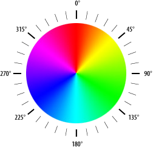
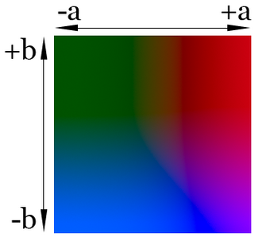
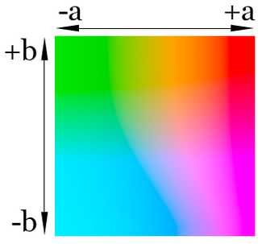

CSS свойство color определяет цвет текста элемента. Значения свойства, заданное как transparent, устанавливает прозрачный цвет.
Цвет в стилях можно задавать разными способами: по шестнадцатеричному значению, по названию, в формате RGB, RGBA, HSL, HSLA, HWB, LAB, LCH.
div {
color: #000; /* черный цвет текста */
color: rgb(0, 0, 0);
color: rgba(0, 0, 0, 1);
color: hsl(0, 0, 0);
color: hsla(0, 0, 0, 1);
color: hwb(359 0% 100%);
}Ключевое слово currentColor соответствует значению свойства color для текущего элемента. Это позволяет использовать значение цвета для свойств, которые не получают его по умолчанию. Например можно установить цвет тени у блока.
.cc1{
background:#f0f0f0; /* Цвет фона */
color:#3b4d81; /* Синий цвет текста */
padding:10px;
border:1px solid;
border-radius:5px;
box-shadow:0 0 5px currentColor; /* Параметры тени - currentColor*/
transition:1s;
}
.cc1:hover {color: #009d4b;} /* Зелёный цвет текста */
Цвет рамки явно не указан, поскольку он по умолчанию задаётся таким же, как и значение color. При наведении указателя на блок, цвет текста, рамки и тени меняется на зелёный.
Цвета задаются числами в шестнадцатеричном коде. Шестнадцатеричная система, в отличие от десятичной системы, базируется, как следует из её названия, на числе 16. Цифры будут следующие: 0, 1, 2, 3, 4, 5, 6, 7, 8, 9, A, B, C, D, E, F. Цифры от 10 до 15 заменены латинскими буквами. Числа больше 15 в шестнадцатеричной системе образуются объединением двух чисел в одно. Например, числу 255 в десятичной системе соответствует число FF в шестнадцатеричной системе.
Чтобы не возникало путаницы в определении системы счисления, перед шестнадцатеричным числом ставят символ решетки #, например:
div {
background-color: #e2a6ff;
}Каждый из трёх цветов — красный, зелёный и синий — может принимать значения от 00 до FF. Таким образом, обозначение цвета разбивается на три составляющие #rrggbb, где первые два символа отмечают красную компоненту цвета, два средних — зелёную, а два последних — синюю.
Допускается использовать сокращенную форму вида #rgb, где каждый символ следует удваивать. Так, запись #fe0 следует расценивать как #ffee00.
Можно определить цвет, используя значения красной, зелёной и синей составляющей в десятичном исчислении. Каждая из трёх компонент цвета принимает значение от 0 до 255. Также допустимо задавать цвет в процентном отношении, при этом 100% будет соответствовать числу 255.
Вначале указывается ключевое слово rgb, а затем в скобках, через запятую указываются компоненты цвета, например:
div {
color: rgb(255, 128, 128);
background: rgb(100%, 50%, 50%);
}RGBA формат - Red, Green, Blue, Alpha. Все параметры кроме прозрачности аналогичны RGB. При выборе значения прозрачности равным 0.5, элемент становится полупрозрачным, 0 делает объект полностью прозрачным, а 1 отменяет прозрачность.
div {
color: rgba(204, 62, 114, 0.8);
color: rgba(204 62 114 / 0.8); /* для современных браузеров, кроме IE */
}HSL формат - Hue (оттенок), Saturation (насыщенность), Lightness (осветление). Данный формат цвета задается при помощи функции hsl() (от англ. «hue, saturation, lightness» — «оттенок, насыщенность, светлота») в которой задают три параметра для получения нужного цвета. В старых версиях браузеров параметры отделялись друг от друга запятыми, в современных браузерах запятые можно опускать.
div {
/* для старых браузеров */
color: hsl(оттенок, насыщенность, осветление);
/* для современных браузеров, кроме IE */
color: hsl([from color] оттенок насыщенность осветление [/alpha-value]);
color: hsl(204, 62%, 14%);
color: hsl(204 62% 14%); /* для современных браузеров, кроме IE */
color: hsl(from rgb(255 0 0) calc(h + 60) calc(s - 20) calc(l - 10))
}
linear-gradient(90deg, hsl(120 0% 50%), hsl(120 50% 50%), hsl(120 100% 50%));linear-gradient(90deg, hsl(120 50% 0%), hsl(120 50% 50%), hsl(120 50% 100%));HSLA формат - Hue, Saturation, Lightness, Alpha (альфа-канал). Цветовое значение в формате HSLA аналогично HSL, но с добавлением регулировки прозрачности как в RGBA.
HWB формат - Hue (оттенок), Whiteness (белизна), Blackness (чернота). Цвет в этом формате можно представить как краску, которая в определённых пропорциях смешивается с белой или чёрной краской для получения желаемого цвета. Данный формат цвета задается при помощи функции hwb() (от англ. «hue, whiteness, blackness» — «оттенок, белизна, чернота») в которой задают три параметра для получения нужного цвета.
div {
color: hwb(оттенок белизна чернота [/alpha-value]);
color: hwb(11 2% 5%); /* Красный */
color: hwb(33 24% 5%); /* Оранжевый */
color: hwb(0 55% 45%); /* Серый */
color: hwb(98 21% 11% / 40%); /* Полупрозрачный зелёный */
}linear-gradient(90deg, hwb(120 0% 0%), hwb(120 100% 0%));linear-gradient(90deg, hwb(120 0% 0%), hwb(120 0% 100%));| 125 | 125 | 111 | 18 | 128 | 125 | 128 | 83 | 18 |
LAB — аббревиатура названия двух разных (хотя и похожих) цветовых пространств. Более известным и распространенным является CIELAB (точнее, CIE 1976 L*a*b*), другим — Hunter Lab (точнее, Hunter L, a, b). Таким образом, Lab — это неформальная аббревиатура, не определяющая цветовое пространство однозначно. Чаще всего, говоря о пространстве Lab, подразумевают CIELAB.
При разработке Lab преследовалась цель создания цветового пространства, изменение цвета в котором будет более линейным с точки зрения человеческого восприятия (по сравнению с XYZ), то есть с тем, чтобы одинаковое изменение значений координат цвета в разных областях цветового пространства производило одинаковое ощущение изменения цвета. Оба цветовых пространства рассчитываются относительно определенного значения точки белого. Если значение точки белого дополнительно не указывается, подразумевается, что значения Lab рассчитаны для стандартного осветителя D50.
В цветовом пространстве LAB значение светлоты отделено от значения хроматической составляющей цвета (тон, насыщенность). Светлота задана координатой L (изменяется от 0 до 100, то есть от самого темного до самого светлого), хроматическая составляющая — двумя декартовыми координатами a и b. Первая обозначает положение цвета в диапазоне от зелено-голубого до красно-малинового, вторая — от голубого до желтого.


Данный формат цвета задается при помощи функции lab() в которой задают три параметра для получения нужного цвета - яркость, ось a, ось b. (Конвертор цветов.)
div {
color: lab( L a b [/alpha-value] );
color: lab(0, 0, 0); /* черный #000000 */
color: lab(100, 0.01, -0.01); /* белый #ffffff */
color: lab(53.59, 0, 0); /* серый #808080 */
color: lab(32.3, 79.2, -107.86); /* синий #0000ff */
color: lab(53.23, 80.11, 67.22); /* красный #ff0000 */
color: lab(46.23, -51.7, 49.92); /* зеленый #008000 */
color: lab(97.14, -21.56, 94.48); /* желтый #ffff00 */
}Функция lab() помимо непосредственного задания цвета может задавать цвет относительно другого значения цвета при помощи ключевого слова from и указанного цвета в качестве начального значения в любом формате CSS.
div {
color: lab( from color L a b [/alpha-value] );
}| 119 | 119 | 105 | 16.4 | 128 | 119 | 128 | 79 | 16.4 |
Данный формат цвета задается при помощи функции lch() в которой задают три параметра для получения нужного цвета - яркость, насыщенность и оттенок.
div {
color: lab( L C H [/alpha-value] );
color: lch(50% 130 20); /* red */
}| 119 | 119 | 105 | 16.4 | 128 | 119 | 128 | 79 | 16.4 |